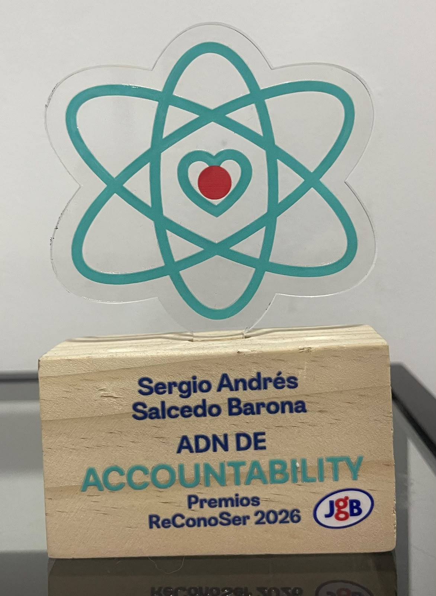
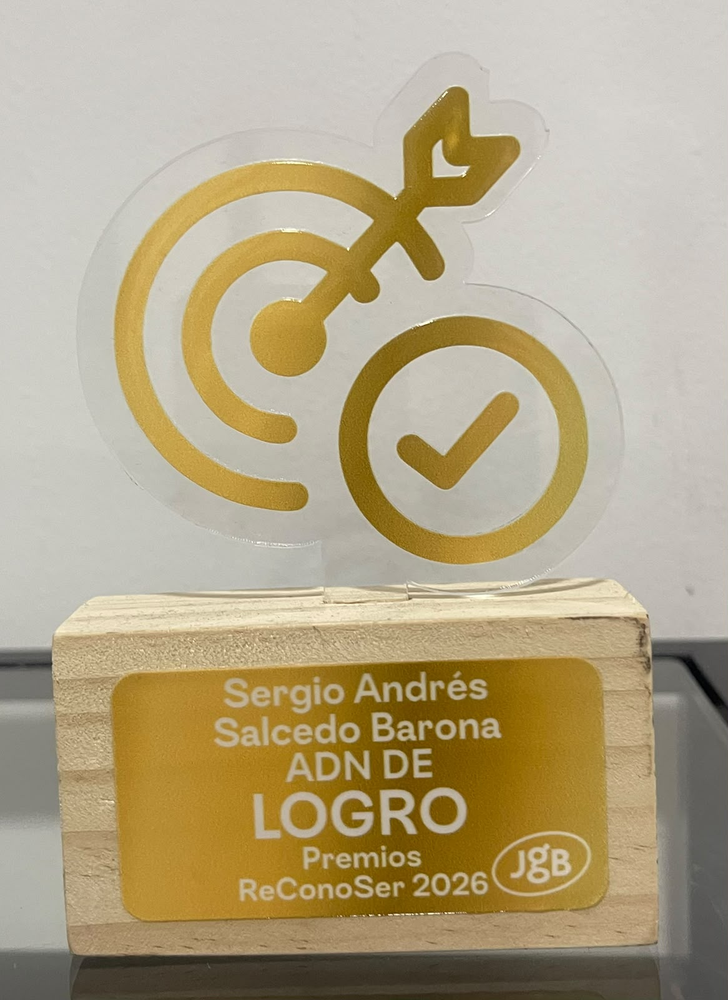
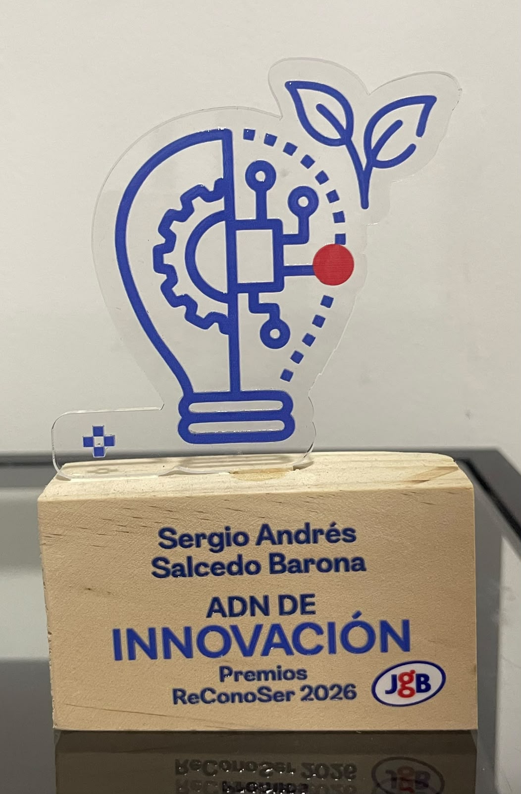

Technology Analyst with solid experience in the development, implementation, and support of enterprise
solutions. Specialized in data analysis and technologies such as Power Platform, SQL Server, and SAP.
Focused on workflow automation, the implementation of Artificial Intelligence (Copilot Studio) to improve
operational efficiency, and cross-functional collaboration to support digital transformation.
Education
Systems Technologist - Universidad Antonio José Camacho (Currently)
Work experience
Enterprise Applications Developer
July 2023 - January 2024
Designed and developed enterprise applications with business logic and customized functionality.
Created dynamic forms to facilitate information registration in SharePoint lists.
Implemented workflows with Power Automate to automate business processes.
Integrated Power Apps and Power Automate to improve functionality and operational efficiency.
Used SQL Server and SharePoint as data sources for enterprise applications
Provided user training and technical support to ensure solution adoption and continuity
Development Analyst
March 2024 - October 2024
Analyzed, designed, implemented, and improved information systems and IT processes for the company
and its clients.
Developed or adapted software applications according to identified requirements.
Identified and analyzed business requirements, evaluated current processes, and proposed
improvement opportunities.
Designed use cases and supported the functional definition of solutions.
Prepared technical documentation and user manuals, in addition to implementing improvements.
Developed tracking tools and models for operational process monitoring.
Performed quality testing on developed solutions and managed software incidents through resolution.
Supported the IT team in strengthening systems and assisting with data migration/transfer between
applications.
IT Solutions Analyst
October 2024 - Present
Developed, implemented, and supported enterprise applications and automations using Power Platform
(Power Apps, Power Automate, Power BI), SQL Server, and SAP Build, focused on process optimization
and digitalization.
Managed and maintained multiple internal applications, handling incidents, analyzing root causes, and
ensuring operational continuity and solution improvement.
Performed data analysis and transformation in SQL Server, including queries, views, SSIS ETL
processes, Jobs, Triggers, and Stored Procedures to diagnose incidents, validate information, and
understand data flows between systems and reports.
Developed web automation solutions using JavaScript, Puppeteer, and Selenium, including automated
extraction and processing of information from web portals.
Developed and maintained analytics and data visualization solutions using Power BI and Tableau, while
participating in Artificial Intelligence and Copilot Studio initiatives through the creation of agents to
automate recurring information requests.
Analyzed requirements and improved processes by working cross-functionally with business areas and
technology providers to design solutions, resolve incidents, and coordinate outsourced services.
Skills
Power Platform: Power Apps, Power
Automate (Cloud & Desktop), Dataverse
Databases & ETL: SQL Server, SSIS (Visual
Studio)
SAP Ecosystem: SAP Build, SAP Scripting
Data Analysis: Advanced Excel (Macros),
Tableau
Collaboration & AI: SharePoint, Copilot Studio
(Agents)
Awards
Accountability DNA at JGB (May 2026)

Recognition for demonstrating commitment, responsibility, and a sense of belonging, by taking on challenges and fulfilling assigned responsibilities.
Achievement DNA at JGB (May 2026)

Recognition for achieving the objectives and goals set during the year, demonstrating a results-oriented approach and commitment to the company’s objectives.
Innovation DNA ad JGB (May 2026)

Recognition for contributing innovative ideas and proposing solutions that help optimize processes and improve work efficiency.